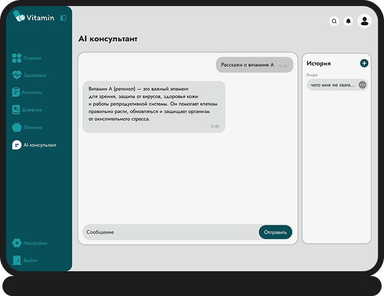
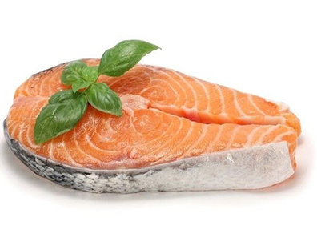
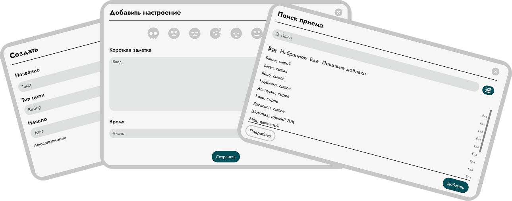
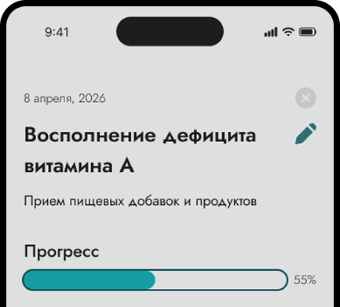

Витамин A
5%
Рост за месяц
Следи за уровнем витаминов и важными показателями, загружай анализы, записывай питание
и приём добавок, а AI-консультант поможет разобраться в данных и повседневных привычках.
Загружай результаты лабораторных анализов и сохраняй показатели в одном месте. Vitamin помогает отслеживать изменения со временем и обращать внимание на показатели, которые стоит обсудить со специалистом.
Рост за месяц
Падение за месяц
Рост за месяц
Не знаешь, что означает показатель в анализах? Хочешь понять, какие продукты содержат нужные нутриенты? Спроси Vitamin. AI учитывает информацию из твоего профиля и помогает разобраться в вопросах питания и витаминов простым языком.

Vitamin помогает находить рецепты и продукты, которые подходят под твои текущие потребности. Добавляй приёмы пищи, отслеживай рацион и находи идеи, как восполнять необходимые нутриенты через еду.
22 ккал

134 ккал
250 ккал
Записывай приёмы пищи, витамины и добавки, настроение и другие ежедневные события. Со временем Vitamin помогает собрать эти данные в единую картину твоего образа жизни.

Анализы, витамины, питание, добавки, настроение и AI-консультант — всё в одном месте. Собирай данные о себе, лучше понимай свои привычки и принимай более осознанные решения о здоровье.
Начать с Vitamin